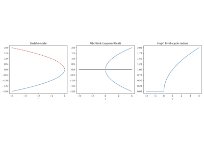
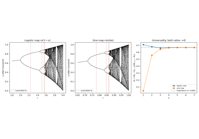
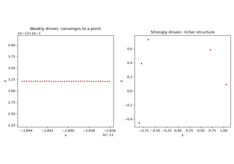

Breakthroughs in Dynamical Systems#
“It often happens that small differences in the initial conditions produce very great ones in the final phenomena.” – Henri Poincare, Science et Methode, 1908
A dynamical system’s qualitative behavior – does it settle down, spiral
in, oscillate forever, or wander chaotically – can often be understood
without ever solving the equations exactly. This chronology traces the
ideas behind mathematicskit.ode_dynamics: the classification of linear
flows near a fixed point, the discovery of self-sustained oscillation,
and the slow, then sudden, realization that simple deterministic systems
can behave unpredictably.
1881 – 1886 – Poincare’s Qualitative Theory of ODEs#
Henri Poincare’s series of memoirs “Sur les courbes definies par une equation differentielle” founded an entirely new way of studying differential equations: rather than seek a closed-form solution, study the flow’s qualitative structure directly in the phase plane – classifying fixed points as nodes, saddles, spirals (foci), or centers by the eigenvalues of the linearized flow, exactly the trace-determinant classification still taught today.
Implementation: mathematicskit.ode_dynamics.systems.stability.classify_fixed_point_2d()
implements exactly this \((\tau,\Delta)\)-plane classification, and
Linear2D/
Nonlinear2D render
the corresponding phase portraits.
References: H. Poincare, “Sur les courbes definies par une equation differentielle,” Journal de Mathematiques Pures et Appliquees, several installments (1881-1886).
1926 – van der Pol and the Relaxation Oscillator#
Balthasar van der Pol, studying the vacuum-tube circuits behind early radio, found that a certain nonlinear damping term – damping that removes energy from large oscillations but injects energy into small ones – produces a self-sustained oscillation of a fixed amplitude and shape, completely independent of the initial condition, called a limit cycle. It is the archetypal example of the Poincare-Bendixson theorem’s conclusion: a bounded planar flow with no fixed point in some region must approach a periodic orbit.
Implementation: mathematicskit.ode_dynamics.systems.limit_cycles.VanDerPolOscillator
integrates exactly this equation, with
estimate_limit_cycle_amplitude()
measuring the amplitude the system settles into regardless of where it
starts.
References: B. van der Pol, “On Relaxation-Oscillations,” The London, Edinburgh, and Dublin Philosophical Magazine and Journal of Science 2(7) (1926), 978-992.
1963 – Lorenz and Deterministic Chaos#
Edward Lorenz, running a simplified 12-variable weather model on an early computer, restarted a simulation midway from a printout rounded to three decimal places instead of the machine’s full six – and watched the re-run diverge completely from the original within a simulated month. Lorenz’s three-variable convective model isolated the same sensitivity to initial conditions in a system simple enough to fully analyze, launching the modern study of deterministic chaos and giving popular science the phrase “the butterfly effect.”
Connection: the same trace-determinant linear-stability analysis this package applies throughout classifies the Lorenz system’s own fixed points, and the bifurcation/limit-cycle/Poincare-section machinery below is the general toolkit chaos theory built to make sense of what Lorenz found.
References: E. N. Lorenz, “Deterministic Nonperiodic Flow,” Journal of the Atmospheric Sciences 20(2) (1963), 130-141.
1885 – 1937 – Poincare, Andronov, and Bifurcation Theory#
Poincare’s qualitative program (above) raised the natural next question: how does a fixed point’s classification change as a parameter varies? Aleksandr Andronov’s 1929-1937 work on nonlinear oscillations gave the answer its systematic modern treatment, naming and classifying the elementary ways a system’s qualitative behavior can change discontinuously as a parameter crosses a critical value – a saddle-node bifurcation creating or destroying a pair of fixed points, a pitchfork bifurcation splitting one stable state into two, and a Hopf bifurcation birthing a limit cycle from a spiral fixed point that loses stability.
Implementation: mathematicskit.ode_dynamics.systems.bifurcations.saddle_node_fixed_points(),
pitchfork_fixed_points(),
and hopf_limit_cycle_radius()
give the closed-form fixed points/limit-cycle radius for each normal
form, checked directly against numerical integration.
References: A. A. Andronov and L. Pontryagin, “Systemes grossiers,” Doklady Akademii Nauk SSSR 14(5) (1937), 247-250.

Saddle-node, pitchfork, and Hopf bifurcation diagrams
1978 – Feigenbaum’s Universality#
Studying the logistic map’s period-doubling route to chaos numerically on a programmable calculator, Mitchell Feigenbaum noticed that the parameter intervals between successive period-doublings shrink by a constant ratio – and that the same ratio, \(\delta \approx 4.6692\), governs the period-doubling cascade of an enormous class of unrelated one-dimensional maps with a single smooth maximum. It was one of the first, and remains one of the most striking, examples of a universal quantitative law governing the transition to chaos, holding across wildly different physical systems.
Implementation: mathematicskit.ode_dynamics.systems.logistic_map.LogisticMap
and bifurcation_diagram()
reproduce the cascade directly;
estimate_feigenbaum_delta()
estimates \(\delta\) from the first few numerically located
bifurcation points.
References: M. J. Feigenbaum, “Quantitative Universality for a Class of Nonlinear Transformations,” Journal of Statistical Physics 19(1) (1978), 25-52.

The logistic map’s period-doubling route to chaos
1957 – Duffing, Ueda, and the Stroboscopic Poincare Section#
Georg Duffing’s 1918 monograph analyzed the forced, damped, cubically nonlinear oscillator that now bears his name; it was Yoshisuke Ueda’s 1961 numerical experiments (published more widely from 1970 onward) that first revealed its chaotic regime, using exactly the tool Poincare had introduced in the three-body problem eight decades earlier: sample the state once per drive period instead of plotting a continuous trajectory, turning an illegibly tangled orbit into a scatter of points whose own pattern – a few dots for periodic motion, a structureless (or fractal-looking) haze for chaos – makes the underlying dynamics legible.
Implementation: mathematicskit.ode_dynamics.systems.poincare.DuffingOscillator
integrates exactly Duffing’s equation, and
stroboscopic_poincare_section()
implements exactly this once-per-drive-period sampling.
References: G. Duffing, Erzwungene Schwingungen bei veränderlicher Eigenfrequenz und ihre technische Bedeutung (Braunschweig: Vieweg, 1918); Y. Ueda, “Randomly Transitional Phenomena in the System Governed by Duffing’s Equation,” Journal of Statistical Physics 20(2) (1979), 181-196 (a widely cited later account of the phenomenon Ueda’s simulations first turned up around 1961).

Poincare sections of the driven Duffing oscillator